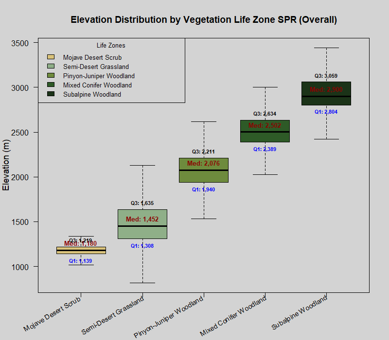
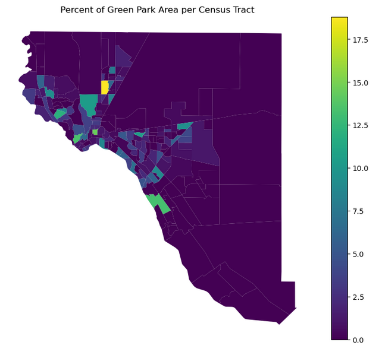
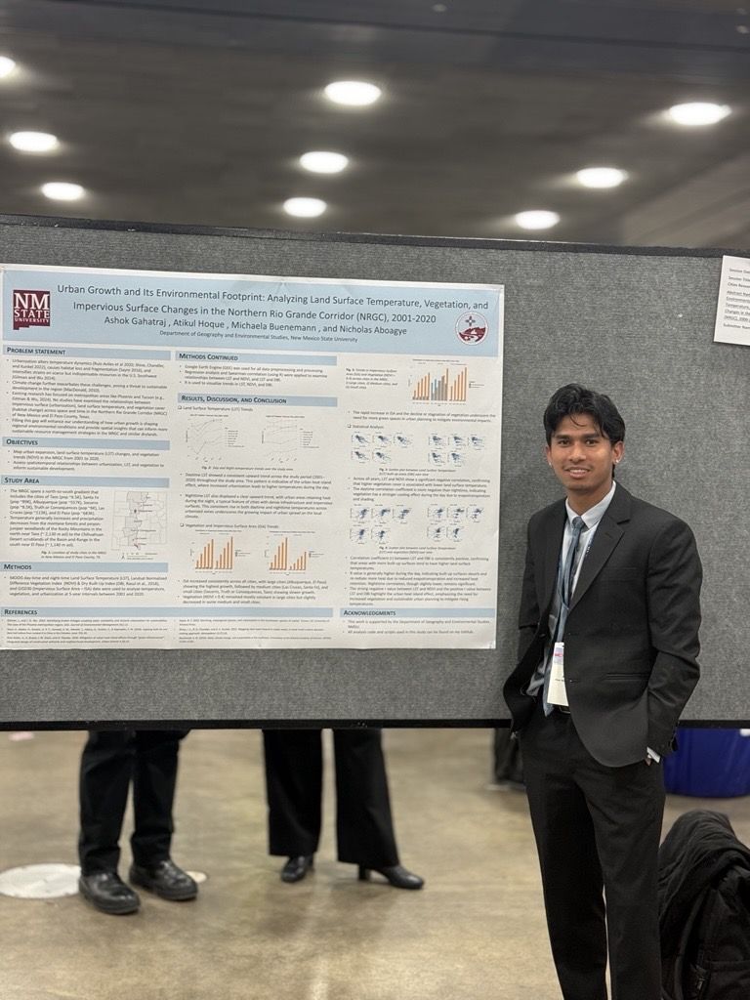
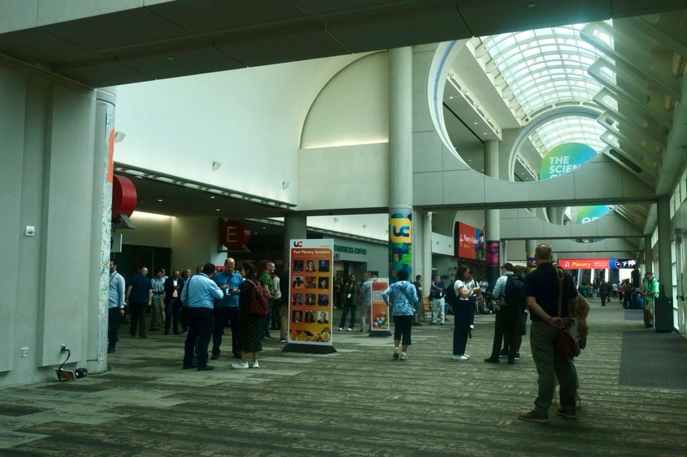
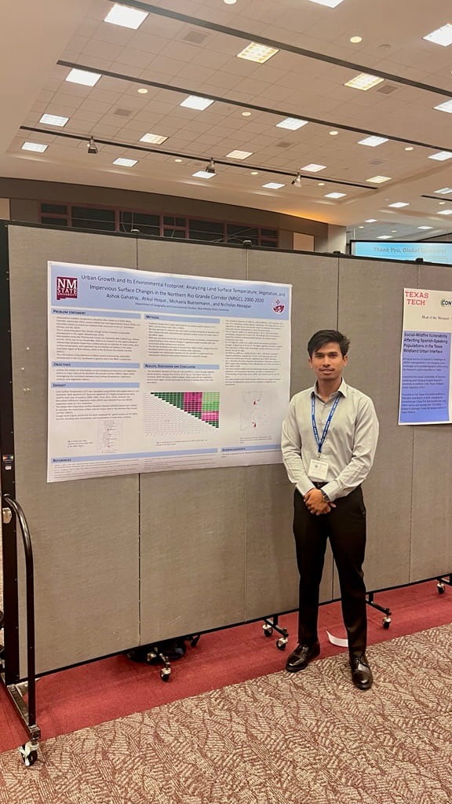

Hi, I’m Ashok Gahatraj, a graduate student in Applied Geography at New Mexico State University, working at the intersection of GIScience, remote sensing, and spatial analysis.
This website is a collection of the things that shape how I see the world: research, maps, satellite imagery, photography, travel, stories, and everyday moments that make places feel alive.
Here you’ll find the work I do, the questions I explore, and the experiences that continue to shape me both inside and outside academia.
4+ yrs GIS Remote Sensing GeoAI / ML Python · R · GEE
Add your photo
Las Cruces, NM
Scroll
About
Geospatial Researcher. Curious by Nature.
I’m a graduate researcher in Applied Geography at New Mexico State University, where I study how geography, environment, and human systems interact across space and time. My work combines GIScience, remote sensing, climate data, and spatial analysis to better understand the patterns shaping both natural and built environments.
My current research focuses on vegetation phenology in the Sky Islands of the U.S. Southwest, isolated mountain ecosystems rising from surrounding deserts. Using satellite imagery, climate datasets, and geospatial modeling, I explore how elevation, climate variability, and disturbance influence seasonal vegetation dynamics across these landscapes.
Beyond environmental research, I’m also interested in urban inequality, spatial accessibility, public health, digital landscapes, and the ways geography quietly shapes everyday life. Before coming to New Mexico, I worked as a Data Analyst at Numeric Mind in Kathmandu, Nepal, supporting healthcare and clinical trial projects through spatial analysis and machine learning workflows.
Outside academics, I enjoy photography, traveling, walking through unfamiliar cities, and observing the small details that give places their character. For me, geography has always been more than maps or technology, it’s a way of understanding relationships between people, landscapes, memory, and experience.
“I think some of the best conversations happen while walking without a destination.”
AutoCADRevit (basic)UAV / PhotogrammetryDGPS · Total Station
2024–Now
M.S. Applied GeographyNew Mexico State University · GPA 3.97
2017–22
B.E. Geomatics EngineeringTribhuvan University, Nepal
My Journey
From Nepal to New Mexico
Every stage of my journey changed the way I understand place, people, and geography; from surveying landscapes in Nepal to working with healthcare data, satellite imagery, and spatial research in the American Southwest. Each experience added a new perspective, gradually shaping the way I think about the world today.
2017 – 2022
B.E. Geomatics Engineering
Tribhuvan University · Pokhara, Nepal
This is where my relationship with geography began. I built foundations in surveying, cartography, geodesy, photogrammetry, and GIS, while learning how spatial data quietly shapes infrastructure, disaster response, planning, and everyday life. More importantly, it taught me to see geography not just as maps, but as a way of understanding the world.
Worked with open geospatial data for community mapping and disaster preparedness initiatives across Nepal. This experience introduced me to the human side of mapping, understanding how spatial data can directly support communities, accessibility, and real-world decision making.
Worked with healthcare and clinical trial datasets to support spatial analysis, machine learning workflows, and data-driven decision making. During this period, I became increasingly interested in how geospatial thinking and predictive analytics could work together to solve real-world problems beyond traditional mapping.
At NMSU, my work expanded into remote sensing, climate analysis, and environmental modeling. I currently study vegetation phenology across Sky Island ecosystems using satellite imagery and geospatial modeling, while also teaching GIS and remote sensing labs. This stage deepened both my technical research skills and my broader understanding of geography as an interdisciplinary field.
MODIS · GEE · RPhenofit · BFASTUrban AnalyticsGPA 3.97
May – Sept 2025
GIS Analyst Intern · New Mexico State University
NMSU · Las Cruces, New Mexico
Led the development of an ArcGIS Indoors implementation for research space management at NMSU, working on indoor mapping, geodatabase design, dashboards, and digital twin visualization. This experience showed me how spatial technologies can shape not only outdoor environments, but also the way institutions understand and manage the spaces inside buildings.
ArcGIS IndoorsDigital TwinDashboards · Hub
Research
What I Work On
My interests span environmental systems, cities, technology, and human experience, but they are all connected by one thing: spatial thinking. I’m drawn to questions where geography reveals patterns, relationships, and stories that might otherwise go unnoticed, from desert ecosystems and urban inequality to virtual worlds and indoor environments.
01
Vegetation Phenology & Climate Dynamics
My thesis research examines how climate, elevation, and disturbance shape vegetation phenology across the Sky Islands of the U.S. Southwest. Using long-term satellite imagery, climate datasets, and geospatial modeling, I study how seasonal vegetation patterns respond to environmental variability across desert mountain ecosystems.
MODIS · Phenofit · GEE · RPRISM Climate CorrelationBimodal Detection
02
Urban Inequality & Environmental Justice
I’m interested in how urban environments reflect inequality through heat exposure, green space access, healthcare accessibility, and infrastructure distribution. My work explores how geography and socio-economic structure interact to shape environmental vulnerability across cities and communities.
I’m interested in how AI, machine learning can improve the way we understand spatial and environmental systems. My work explores predictive modeling, pattern detection, and geospatial analytics for applications in ecology, climate research, public health, indoor navigation, and urban systems.
One of my favorite projects explored how video games borrow geographic ideas from the real world. By analyzing games like GTA, Red Dead Redemption, and Uncharted 4, I examined how themes such as urban inequality, environmental determinism, and place identity are translated into virtual landscapes and player experiences.
Cultural GeographyUrban InequalityArcGIS StoryMaps
I’m interested in how indoor spatial technologies can support smarter and more responsive institutions. My work with ArcGIS Indoors focuses on indoor mapping, space management, digital twins, and spatial data infrastructure for research and campus environments.
ArcGIS IndoorsIndoor NavigationDigital TwinSpatial Data Infrastructure
Projects
Selected Work
A collection of projects exploring the relationships between environment, technology, cities, and human experience through GIS, remote sensing, spatial analysis, and storytelling.

Remote Sensing · Thesis
Sky Islands Vegetation Phenology
A long-term remote sensing study examining how climate, elevation, and seasonal variability shape vegetation dynamics across Sky Island mountain ecosystems in the U.S. Southwest. Using MODIS imagery, climate datasets, and geospatial modeling, this project explores how desert mountain landscapes respond to environmental change across space and time.
Explored how extreme heat exposure, social vulnerability, and healthcare accessibility intersect across communities in New Mexico. This project used spatial statistics and hotspot analysis to identify areas where environmental risk and limited access to resources overlap most strongly.
Hotspot Analysis · GWR · Social VulnerabilityExplore More →

Urban Analytics
Urban Heat & Park Accessibility · El Paso, TX
Analyzed the relationship between urban heat, vegetation cover, and park accessibility across El Paso, Texas. By combining land surface temperature, NDVI, and spatial statistics, the project identified neighborhoods experiencing elevated heat exposure and limited environmental accessibility.
An exploration of how video games borrow spatial ideas from the real world to shape narrative, atmosphere, and player experience. Through games like GTA, Red Dead Redemption, and Uncharted 4, the project examined themes of urban inequality, environmental determinism, and place identity in virtual landscapes.
Designed and developed an ArcGIS Indoors implementation for research space management at New Mexico State University. The project included indoor mapping, geodatabase architecture, occupancy dashboards, and digital twin visualization to support smarter space management and institutional decision making.
A 20-year remote sensing analysis of land use change and land surface temperature dynamics in Rupandehi District, Nepal. Using Landsat imagery, NDVI, and NDBI, the study explored how urban expansion and landscape transformation influenced environmental conditions over time.
Assessing the Relationship Between Land Use/Land Cover Change, NDVI, NDBI, and Land Surface Temperature: A 20-Year Analysis of Rupandehi District, Nepal
Urban Growth and Land Surface Temperature in the Northern Rio Grande Corridor
AAG Annual Meeting 2025
Gahatraj, A.

2026
Conference
Esri User Conference 2025 — Attendee
Esri UC · San Diego, CA
Gahatraj, A.

2024
Conference Poster
Poster Presentation
SWAAG Conference 2024
Gahatraj, A.

2021
Conference
Geomatics Engineering Association of Nepal Annual Conference
GEAN · Nepal
Gahatraj, A.
3rd Place · SWAAG 2026
Robert & Elizabeth Czerniak Endowed Scholarship · 2025
Richard D. Wright Graduate Award for Excellence in Applied GIS · 2025
Gamma Theta Upsilon Honor Society
CV & Credentials
Background & Experience
Experience across GIS, remote sensing, spatial analytics, and data science, from humanitarian mapping and healthcare analytics to environmental research and indoor spatial systems.
"Sometimes a place reveals itself best through the people moving quietly inside it."
I’m drawn to ordinary places and the small details inside them: crowded markets, street corners, passing conversations, changing light, people lost in thought. Time moves constantly, and most moments disappear before we even realize they mattered. Photography, for me, is a way of holding onto those fragments for a little longer, the feeling of a place, a memory, a fleeting expression, a moment that would otherwise quietly pass by.
These photographs aren’t meant to document everything. They’re simply my way of slowing down, paying attention, and being fully present somewhere.
Poetry, cinematic observations, space thoughts, and the kind of things you write at 11pm and don't delete in the morning. This is everything that doesn't fit a résumé but makes the work make sense.
The Quiet Archive6/10/2025
On Love and the Cosmos
"Stars shimmer above, and meteors streak across the sky. The world is still. Zeena leans on Kai’s shoulder, eyes on the sky."
[Setting: A quiet hilltop at night. Stars shimmer above, and meteors streak across the sky. The world is still. Zeena leans on Kai’s shoulder, eyes on the sky.]
Zeena: (softly)
“Kai… quick. Make a wish.”
Kai: (without looking away from the sky)
“I already did.”
Zeena:
“What did you wish for?”
Kai: (turns to her, voice barely above a whisper)
“For silence… the kind where nothing speaks but your heartbeat. A place without noise, without time, just you, and that sound. That’s all I ever want to hear.”
Zeena: (blushes, but smiles)
“You and your poetic physics.”
Kai: (chuckles, then serious)
“No… this isn’t physics. This is something else. Something beyond rules and particles and equations.”
Zeena: (playfully nudges him)
“Says the guy who explains love with entropy.”
Kai: (grinning, then gently takes her hand)
“Even entropy can’t explain you.”
(He pauses, watching a particularly bright meteor burn through the sky.)
Kai:
“You know… I used to believe the universe was indifferent. Cold. Chaotic. Just a cosmic accident.”
Zeena:
“And now?”
Kai: (looks at her, eyes soft but intense)
“Now I think the universe wrote itself just to bring us to this moment. Every star, every atom, every impossible coincidence, just so I could sit here, under this sky, holding your hand.”
Zeena: (quiet for a second, then whispers)
“Kai…”
Kai:
“You and I… we’re not side characters. We’re not background stories. We are the story. The universe turns because we exist. And when we’re gone… maybe it’ll just stop. Like a book that ends when the last word is spoken.”
Zeena:
“That’s… a little overwhelming.”
Kai: (nods)
“It is. But maybe that’s what love is. Something big enough to make the stars feel small.”
Zeena: (leans her head on his shoulder again)
“So… we’re the beginning and the end?”
Kai:
“The alpha and the omega. The first breath and the last echo.”
(They sit in silence for a while. The only sound is the distant breeze, and the steady rhythm of her heartbeat against his arm.)
Kai: (softly, eyes closed)
“Do you hear that?”
Zeena:
“What?”
Kai:
“Your heartbeat. The sound my wish made real. My only wish,'You'.”
The Quiet Archive6/12/2025
Scenes That Never Happened
"Zeena lies back on the grass, arms behind her head, while Kai sits beside her, his gaze drifting between her and the sky."
[Setting: The meteor shower continues above. Zeena lies back on the grass, arms behind her head, while Kai sits beside her, his gaze drifting between her and the sky.]
Zeena: (smiling up at the sky)
“Kai… what do you think were the odds of us meeting like this? You and me. A law student who barely scraped through her science classes… and you, with your brain wired to stardust and math.”
Kai: (laughs softly, lying down next to her)
“Honestly? The odds are so low, they might as well be zero. But here we are.”
Zeena: (turning to him)
“Tell me. Not the poetic version. The science one. I want to hear the impossible math of us.”
Kai: (quiet for a moment, then begins, almost in a trance)
“Alright… Let’s start at the beginning.”
(He points to the stars.)
Kai:
“First, there had to be a Big Bang—fifteen billion years ago. And the balance of that explosion had to be just right. If it had expanded even a fraction faster, nothing would have formed. A little slower, and the universe would’ve collapsed back in on itself.”
Zeena: (whispers)
“Strike one.”
Kai: (nods)
“Then galaxies formed… somehow. Gravity pulled dust into stars, stars into systems. And out of all those stars, our Sun was born, mid-sized, stable, incredibly rare. And orbiting it, our Earth… not too close to burn, not too far to freeze. Just there, in the Goldilocks zone.”
Zeena:
“Strike two.”
Kai: (smiling)
“Then came Jupiter and Saturn, perfectly placed giant guardians. Without them, comets and asteroids would’ve wiped Earth clean a dozen times. They were like cosmic shields.”
Zeena:
“So the universe gave us bouncers.”
Kai: (grins)
“Exactly. And then Earth got a magnetic field, shielding life from solar radiation. A tilted axis to give us seasons. A moon to stabilize our rotation. And four fundamental forces—gravity, electromagnetism, strong, and weak—balanced just so. Any tiny variation, and atoms wouldn’t bind… stars wouldn’t shine… chemistry wouldn’t exist.”
Zeena: (softly)
“Strike three…”
Kai: (his voice growing gentler)
“Then life. Not just any life, but intelligent life. Do you know how unlikely it is for consciousness to emerge from carbon chains? Then came us—homo sapiens. We could’ve stayed on the savannah, but something pulled us forward. Fire, language, migration… survival.”
Zeena:
“The odds keep shrinking.”
Kai:
“They do. Add in a few ice ages, a bunch of extinction events, and then the lottery of our ancestors. Each one had to survive famine, war, disease… all just so your mother could meet your father. And mine could meet mine.”
Zeena: (turning toward him, eyes locked on his)
“And yet… here we are.”
Kai: (barely a whisper)
“Here we are. Two dots in an infinite night sky. But somehow, those dots connected.”
Zeena:
“I never understood physics… But I understand this. That even if we’re a one-in-a-billion chance… once is all I need.”
Kai:
“You’re my statistical anomaly. My miracle hidden in chaos.”
Zeena: (smiling with a tear escaping)
“Then don’t ever run the numbers again.”
Kai: (leans in, forehead resting against hers)
“I won’t. Not when I’m holding proof the universe is capable of love.”
Space2/27/2025
Space, Entropy, and Consciousness
"We are temporary beings trying to hold temporary moments inside a temporary universe."
Whenever I look at space and consider my role in this massive universe, my mind always splits into two distinct perspectives. The first places me at the absolute center of the universe. The second places me far outside of it, observing as an insignificant speck. Both are true, and both tell me exactly what my life is worth.
The First Perspective: A Universe Built for Me
When I wonder why the universe exists at all, the first perspective tells me that it exists simply for me. The Big Bang happened so I could eventually feel the vastness of space. The solar system formed because I needed warmth, and Earth became habitable so I could breathe the air. Entropy increases, and chaos grows, all to create the exact, perfect conditions required for me to live.
Every event in the universe and throughout Earth’s history happened just so I could exist. It is incredible to think about how chemistry and biology worked so flawlessly together: energy converting into a single-celled organism, evolving into multicellular life, surviving the eras of dinosaurs and ice ages, moving through ape-like creatures, Homo erectus, and Neanderthals. They survived, learned, gained consciousness, and finally, here I am.
I don't say "me" to imply I am the only one; anyone can put themselves in this position and the logic holds. After billions of years, I am conscious, fueled by the same energy created in the Big Bang. Before I existed, the universe was there, but it made no sense—it was simply getting ready for me. All of human history, the civilizations, wars, kings, and soldiers, led to my story. While my direct physical contribution to the entropy of the universe is minimal, all the entropy that ever was, and is, exists for my story to complete. The universe will continue forever after I am gone, but it will make no sense to me, because after my death, my universe dies too.
Since everything—countless cosmic chances, dark matter, dark energy, neutron stars, black holes, dimensions, time, biology, and Earth—happened to make me alive, why should I ever feel powerless, tiny, or insecure? Why should I waste the most valuable gift the universe could give? My existence is the greatest creation the universe could achieve. Everyone and every creature on this Earth is equally priceless, carrying their own story and meaning. In my story, my contribution is absolute, until I lose my consciousness.
The Second Perspective: The Indifferent Cosmos
Then comes the second perspective. The universe is so ancient and vast that a normal mind cannot truly perceive it.
We hear the universe is 13.8 billion years old. I try to comprehend that scale by comparing it to billionaires in our world. A billion dollars is a sum a normal human could never earn in an entire lifetime, yet some achieve it through fortune, hard work, and timing. But comparing the age of the universe to money isn't fair, because an average human life is only about 75 years. It has only been 12,000 years since humans started farming and living in established societies. It’s been just over 250 years since the Industrial Revolution, 2,000 years since Jesus died, 2,500 since Buddha was born, 78,000 since human migration began, and 300,000 since Homo sapiens first appeared.
The human mind cannot easily think beyond hundreds or thousands of years. Comprehending the age of the universe is impossible.
There are about 400 billion stars in the Milky Way, roughly 3 trillion planets, and 2 trillion galaxies in the observable universe. Theories like string theory even suggest a multiverse. Against these numbers, I am nothing. To the universe, the stars, the galaxies, and the march of entropy, my existence holds no weight. If I cease to exist tomorrow, the universe changes nothing. Time will move forward, space will continue, and the universe will expand so fast that even light will never reach its edge.
Even within our own solar system, Earth is just a tiny blue dot. If you combined all the planets and moons, they would be nothing compared to the Sun; thousands of Earths could fit inside it. The thermodynamics, nuclear fusion, and gravitational wars inside the Sun were happening before me, and will continue after me. There are 8 billion people and hundreds of trillions of other creatures on this planet, all with some form of consciousness. If I die tomorrow, leaving aside my family and a few close people, nothing matters to the rest. Every second, three people are born and one person dies. The universe does not blink. Even if Earth vanished tomorrow, the Sun wouldn't notice for eight minutes.
The Synthesis: Finding Peace
I value both of these thoughts equally. Together, they show me my role and my true value.
Because I am tiny and temporary, my consciousness, my empathy, my kindness, and my love are incredibly real. In this life, I have no one to prove anything to but myself. The universe will accept me in every way if I am just able to find peace with myself. There is no cosmic judge, and no mandated deeds required to enter a heaven or avoid a hell.
In a grand, moral sense, there is no universal right or wrong. But in my life, "right" is simply the act that does not contribute pain or sorrow to myself and other people.
Throughout history, people have tried to leave some kind of permanence in this world—sculptures, temples, paintings, writings, and voicenotes. But everything in the universe has a limit and an age. Some leave their presence for a longer time than others, but in the grand scheme of the cosmos, everything will fade away. In your own personal universe, permanence fades the exact moment you lose your consciousness. And understanding that is the ultimate freedom.
Poem4/15/2026
My Dear One
"You are my Zeena ,
my quiet blessing wrapped in storms,
my moon standing fearless
among a sky full of ordinary stars."
I still remember the first words I sent you —
“What are the odds of meeting you
among millions of girls?”
Almost zero…
And even smaller,
calling you mine.
Yet here we are.
Not by accident.
Not by chance.
The universe does not misplace souls like yours.
You are not just any girl.
You are my Zeena ,
my quiet blessing wrapped in storms,
my moon standing fearless
among a sky full of ordinary stars.
Even when you turn silent,
I don’t see distance.
I see autumn.
Leaves falling not as an ending,
but as preparation
for the bravest spring.
Your rough winds,
your guarded heart,
your strong and stubborn waves —
I don’t fear them.
I see the softness you hide
like sunlight waiting behind clouds.
If you are the Sunkoshi river,
restless and wild,
rushing toward unknown places,
then let me be the boat
that does not chase,
does not command the current,
but waits patiently
on your water.
Not to control you.
Not to anchor you down.
Only to float beside you
until you choose
to slow down.
And if you feel like leaving,
like drifting far away,
know this —
my hands are not chains.
They are open skies.
Take your time.
Change your seasons.
Heal your storms.
I am not here to rush your spring.
I am here to witness it.
Because the moon never stops being the moon,
even when clouds forget her light.
And you —
no matter how distant you feel —
are still my blessed one,
my quiet miracle,
my almost impossible chance
that the universe once gave me.
And I will cherish it,
whether you bloom beside me
or find your own horizon.
Thought10/24/2024
Spatial Injustice: The Geography of the Surviving Class
"Inequality is not a glitch in the urban system; in many ways, it is the fuel. By designing cities that prioritize capital over people, we create a spatial hierarchy."
Geography often employs the concept of the Dual City. This is the idea that a single urban area is actually two separate worlds occupying the same space. One is a city of high-end infrastructure, glass skyscrapers, and gated communities; the other is a city of informal settlements and "slums."
In cities like Mumbai, this design is functional. The affluent "formal" city relies on a massive "informal" labor force—drivers, cleaners, and street vendors—to function. However, the city is designed to house these workers in peripheral or marginalized spaces with minimal infrastructure. By keeping certain populations in a state of "surviving," the urban economy ensures a steady supply of low-cost labor.
Modern city design often utilizes Infrastructure Exclusion. This occurs when the movement of resources—clean water, stable electricity, and paved roads—is intentionally routed toward "high-value" zones.
Geographic Concept: Accumulation by Dispossession.
As cities expand, prime land is reclaimed for luxury developments, pushing the poor into "hazard zones" such as floodplains, steep slopes in Kathmandu, or the edges of toxic landfills in Delhi. The design forces the poor to live in precarious environments, making poverty a geographic trap rather than just a financial status.
Urban design uses physical markers to maintain inequality. This is often referred to as Hostile Architecture or Defensive Urbanism.
In developing nations, this looks like:
Flyovers and Expressways: These are designed to allow the middle and upper classes to bypass "poor" neighborhoods entirely, literally soaring over the poverty beneath them. This creates a psychological and physical disconnect.
Gated Communities: These represent the "privatization of space," where public land is turned into exclusive enclaves, further limiting the access of the lower class to green spaces and safe roads.
In geography, Distance Decay suggests that the interaction between two locales declines as the distance between them increases. Modern cities are often designed with "zoning" that places low-income housing far from economic hubs.
For a laborer in New Delhi or a migrant worker in Kathmandu, the "cost of distance" is high. Without affordable public transit, they spend a massive percentage of their income and time just reaching the places where work exists. The city is designed to keep them on the move, but never quite "at home" in the center of prosperity.
Inequality is not a glitch in the urban system; in many ways, it is the fuel. By designing cities that prioritize capital over people, we create a spatial hierarchy. The "surviving class" exists because our urban maps are drawn to prioritize the flow of wealth for some, while building walls—both concrete and economic—for others. To change the society, we must first be willing to redraw the map.
Nothing here yet — check back soon.
Contact
Let's Connect
Open to research collaborations, GIS / data science roles, academic discussions, and speaking engagements.